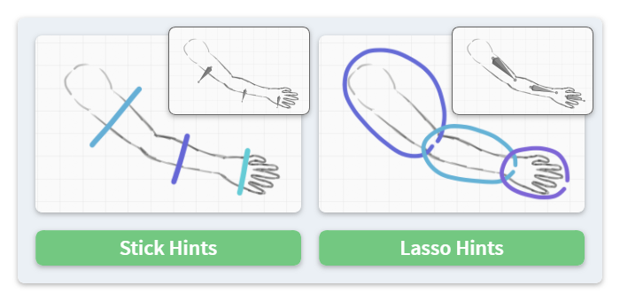

Rigging Utilities #
Although Blender can automatically generate weights rigging Grease Pencil strokes to an armature, the result often requires heavy manual adjustment. NijiGPen provides with several alternative methods generating bone weights.
The rigging-related operations will show up in a panel when the current mode is Weight Paint.
It is recommended to add aSmoothmodifier after theArmaturemodifier if the point movement looks unnatural.
Transfer Weights from Meshes #
The Weight From Meshes button is a tool transferring the weights from rigged mesh objects to the current Grease Pencil object.
The operator requires an armature and one or more source mesh objects as the input. It sets the weights of the armature bones to stroke points according to the nearest vertex from the source mesh objects.
If the source objects are not rigged, the operator can rig them first using the With Automatic Weights parenting tool, and then perform the transfer, controlled by the option Use Existing Weights.
Source Objects #
For 2D animations, one recommended way is to use the other operators this add-on provides, Smart Fill followed by Mesh Generation. The option Quick New Mesh Using Smart Fill does it automatically, using the bones as filling hints.
Meshes generated by this option are relatively simple, taking only the active frame of the active layer into account. For more complex cases, it may be better to finish these operations manually.
Besides the method above, the following ways may also be used to generate a silhouette:
- Blender's Fill tool with the inverted direction.
- A hand-drawn contour is also likely to work, which does not need to be very precise.
Besides using the generated mesh, you can also assign an arbitrary mesh object, or all mesh objects from a collection as the source. For example, this option may be useful when drawing strokes on the surface of a 3D object to keep their bone animation consistent. In that case, please make sure to change to mapping option to 3D Nearest Vertex.
Use Hints to Generate Pins #

The Pins from Hints button is another rigging tool that can be used for rubber hose animations of limbs. It does not require an existing armature as the input. Instead, by drawing some hint strokes, the operator will generate bones at the same position, and then rig the Grease Pencil using these bones by setting weights to nearby points.
Hint Strokes #

The hint strokes should be drawn in a separate layer. Currently, two types of hints are available:
- Stick Shape: Each hint should be a straight line, drawn at the middle of a limb and perpendicular to it. It should intersect with the limb's outlines at both ends.
- The hint's start and end position determine the placement of a bone. All other point/stroke attributes have no impact on the result.
- Lasso Shape: This mode allows the user to precisely select which points to assign weights, by drawing a lasso surrounding them.
- The generated bone starts from the lasso's center, pointing to its start position.
Bone Styles #
There are several options to transform the generated bones:
Bone Style: This determines whether the bone should start from the hint's center (Half) or cross the whole hint shape (Full).Bone Rotation: Setting it to+90or-90degrees can make the bones parallel to the limb.Set Bone Parent: This option sets the parent relationship between bones according to the drawn sequence of hints and the relative position. Please notice that the result sometimes needs manual adjustment.
Other Options #
There are some other options which may impact the result:
Ensure Non-Zero Weights: Enabling this option will make sure that every stroke point gets at least one bone weight, no matter how far it is from the hints. Otherwise, only points close to a hint will be assigned weights.Bind Single Bone to Stroke: In this mode, each stroke will be assigned to at most one bone. This prevents strokes from being distorted.